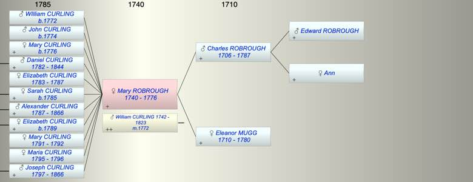

| [Index] |
| Mary ROBROUGH (1740 - 1776) |
|  |

|
| b. 1740 at Southwark |
| m. 20 Feb 1772 William CURLING (1742 - 1823) at St Savior, Southwark |
| d. 1776 at Southwark aged 36 |
| Parents: |
| Charles ROBROUGH (1706 - 1787) |
| Eleanor MUGG (1710 - 1780) |
| Siblings (4): |
| Anna Maria ROBROUGH (1738 - 1800) |
| Rebecca ROBROUGH (1743 - 1808) |
| Charles ROBROUGH (1745 - 1790) |
| Samuel ROBROUGH (1747 - 1748) |
| Events in Mary ROBROUGH (1740 - 1776)'s life | |||||
| Date | Age | Event | Place | Notes | Src |
| 1740 | Mary ROBROUGH was born | Southwark | Note 1 | ||
| 20 Feb 1772 | 32 | Married William CURLING (aged 30) | St Savior, Southwark | Note 2 | |
| 22 Dec 1772 | 32 | Birth of son WIlliam CURLING | City of London | Note 3 | |
| 05 Apr 1774 | 34 | Birth of son John CURLING | London | Note 4 | |
| 1776 | 36 | Mary ROBROUGH died | Southwark | Note 5 | |
| Created on a Mac™ using iFamily for Mac™ on 8 Oct 2023 |